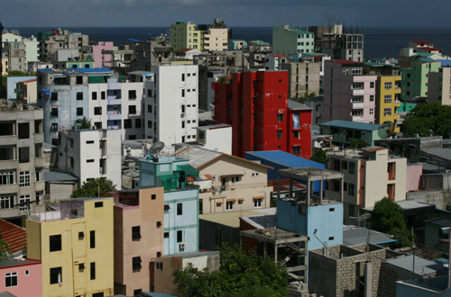
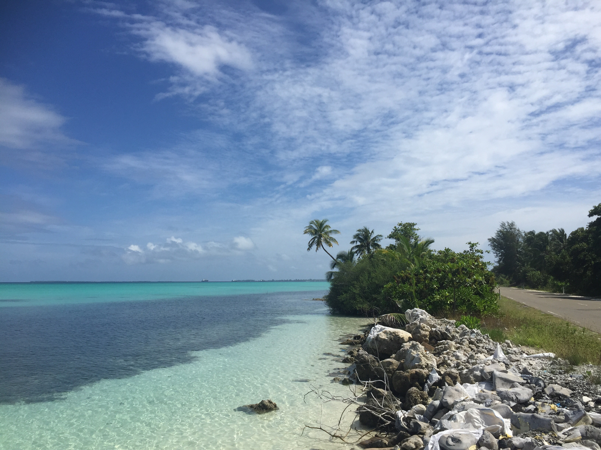
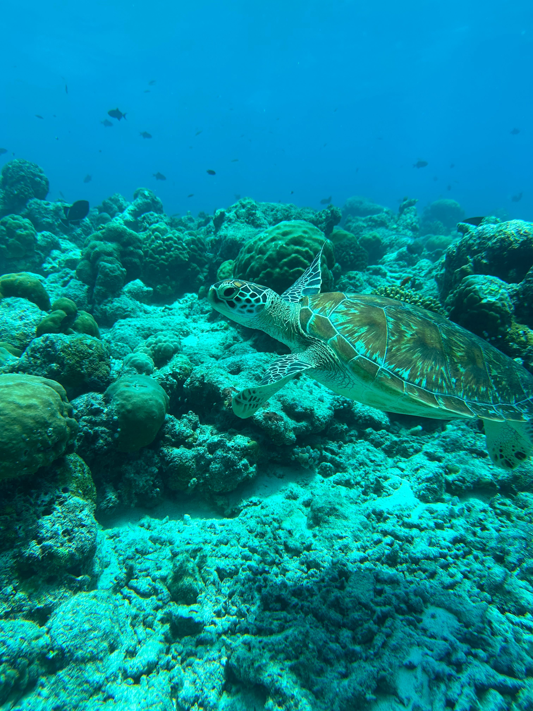
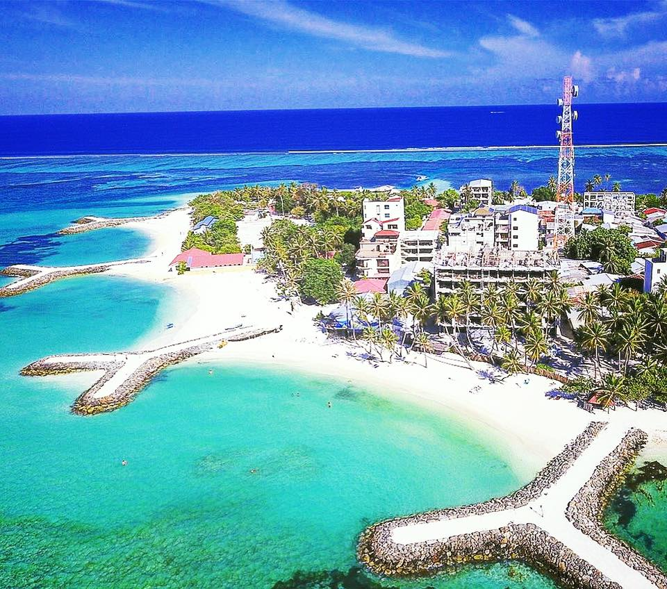

Malé
Fechas disponibles: 14-21 Febrero
Capital del país y centro cultural. Visita la Mezquita del Viernes, el mercado local y disfruta de la vida urbana en una isla única.


Fechas disponibles: 14-21 Febrero
Capital del país y centro cultural. Visita la Mezquita del Viernes, el mercado local y disfruta de la vida urbana en una isla única.

Fechas disponibles: 3-10 Abril
Atolón del sur con playas tranquilas y naturaleza virgen. Ideal para buceo y explorar arrecifes poco concurridos.

Fechas disponibles: 18-25 Mayo
Isla singular con ecosistemas únicos. Destaca por sus lagunas, playas y la posibilidad de avistar tiburones en inmersiones.

Fechas disponibles: 7-14 Julio
Isla artificial moderna cercana a Malé. Ofrece playas accesibles, paseos marítimos y un ambiente relajado.

Fechas disponibles: 22-29 Septiembre
Uno de los destinos más populares de las Maldivas. Destaca por sus playas de arena blanca, actividades acuáticas como snorkel y excursiones a islas cercanas, además de una buena oferta turística.